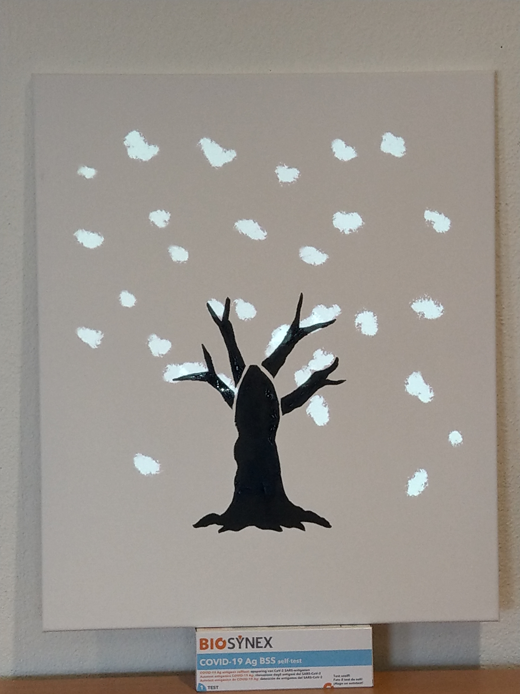
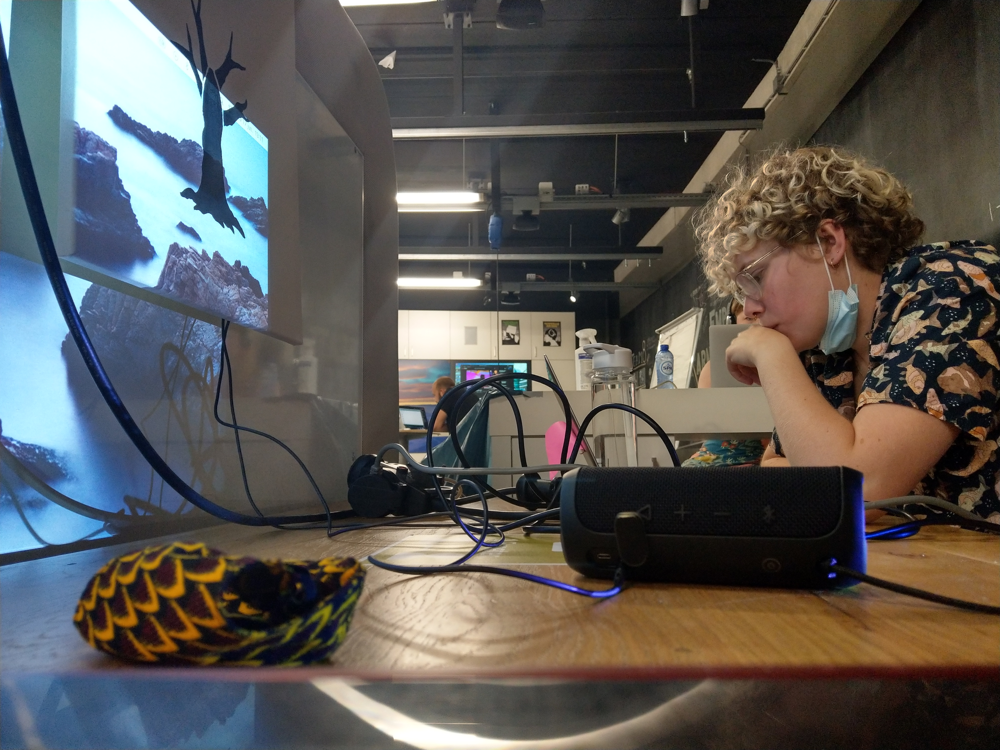

Lab Weeks
Of the 4 topics that we've been practicing with for the last couple of weeks, I found playful interaction the most engaging. Elke and I partnered up for the labweeks, in the beginning still pretty unsure of what was going to come our way or how we were going to tackle this. We started by doing a bit of research online on interactive displays and installations. This all seemed very daunting at the time, so we wanted to spend our first day going back to basics.
Day 1
To get things started we went back to the Arduino workshop exercises and started to figure out how to connect objects to create/trigger sound, which we thought might be fun to work with. I did that with apples:

We drew a lot of pictures with graphite pencils. While doing some research we saw lots of people use graphite, even a tutorial on making your own conductive paint, but that seemed a little dangerous. Pretty soon we landed on conductive paint, but because we weren't sure how it worked. We found working with the arduino pretty annoying, what with all the wires sticking out all the time. Untill we came across the alternative TouchBoard, but it was super expensive, so didn't pay it much attention.
Day 2
In the playground we found a dried out old pot of conductive paint to try out some stuff. Add a little water and the stuff works a treat. With it I painted a little piano that played differents notes.
The next step was to figure out if we could do that with lights aswell, and different sounds, not just code defined notes. We also found a TouchBoard in the playground, which would eliminate the need for jumpercables. We did a bit of research on interactive walls and landed on the idea of making an interactive canvas. The first idea we had was to paint an unfinished picture with the paint on a canvas and that a number of things would happen if the canvas was touched. Initially we thought of 4 canvasses, one for each season. For sound we thought it would be cool to play a small part of Vivaldi's 4 seasons.
Day 3
The new paint we ordered came in and we decided to test how it would work on a canvas with lights:
We managed to hook up our canvasses to the Arduino's and make a light come on whenever the dry paint was touched.
Day 4
Today we borrowed a beamer and started thinking about animation. We talked a lot about what we wanted to animate, and it boiled down to a tree. Instead of 4 canvasses we were gonna use 1. Each branch would trigger a different animation and sound. We also looked at programmes to use for the actual projection and found MadMapper, which looked really difficult to use but turned out to be pretty easy.
Day 5
We tried using Processing, but the images we wanted were not easy to create in that way. I wanted to make something that looked more organic, and I just couldn't get the hang of it. Elke managed to trigger an earlier animation she had made when the conductive paint was touched, so that was pretty cool.
Day 6
Today we managed to trigger different sounds with a touch, with only minimal damage to my fingers:
Turns out I hadn't connected the audio jack properly and it gave me little shocks at each touch... But the TouchBoard was really cool to work with, especially in combination with the conductive paint. All I had to do was secure the board to a surface on which I could paint and voila. Once I got the code right I could upload any soundtrack to the board and have it play by touch. This brough us a huge step further.
Day 7
Today we didn't do all too much. We were at home and we made all 4 of the animations using Procreate on the iPad(see product). I took the most obvious things of the seasones and animated them on the tree. I also made the intro animation, introducing us and the title of the canvas.
Day 8
Today we spent all day looking at code and Madmapper. This is us and half of the teachers getting everything to work smoothly:

These were the first tests:

We managed to make the whole thing work, with more of the credits going to my team mate, and planned to use the last day to cross the t's and dot the i's.
Day 9
Disaster struck. Half of the code that we had written on day 8 was not saved properly, so we spent all day trying to remember what was written. We cut the parts of the music we wanted for the animations and fought with madmapper. Eventually we came to the conslusion that we would not have time to make a filmed presenation so at the end of the day we decided to do a live demonstration at the expo.

Day 10: Expo Day
The expo took place online, so Elke took everything home so that she could present it to the class. This turned out to be a life saver, as I was aparently a chair-person of our group. I general our project was well recieved and I think we would have made it to the top, except that another team had an amazing project and they were hands doen the obvious winners. Still, I was really proud of the project we had made.